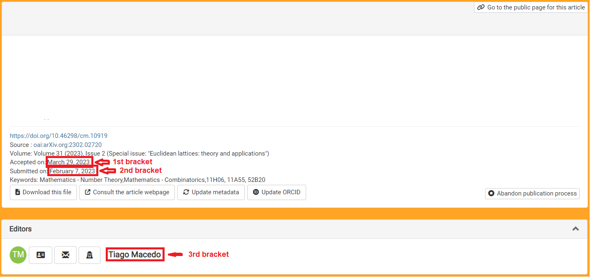
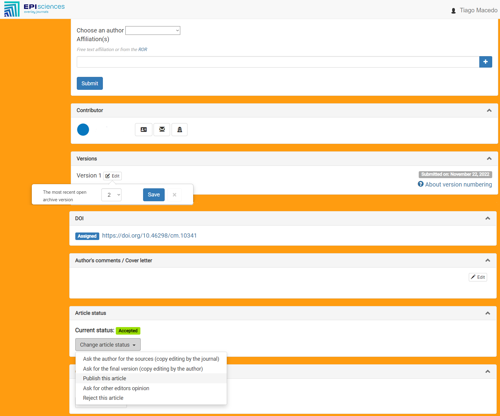

Communications in Mathematics
Technical editing process
Step 1: request authors' source files
As soon as an article is accepted in the Episciences platform, ask the authors to send
their manuscript using the journal's format ('Request for author's sources').
Once you receive the manuscript in the format of the journal, make sure
that the authors have also responded through the Episciences platform.
(Otherwise, you will not be able to proceed with the editorial process.)
Step 2: revision of the manuscript
First, process the tex file sent by the author using the following form:
Next, double-check the following:
-
Spell and grammar. My suggestion is that you copy the content of the
paper, open Google Mail, create a new email, and paste the content of the
paper in the content are of the new email. Google should automatically
check both spelling and grammar.
-
Sentences starting with a mathematical formula. My suggestion is that
you search for ". $" in the tex file and rephrase those sentences.
-
Mathematical formulas that break between two lines. My suggestion is that
you: either use a display (\[ ... \]), or reorder, or rephrase the sentence.
-
Avoid inline formulas longer than half of a line; use math displays
(\[ ... \]) instead.
-
Always use the enumerate and itemize environments for lists.
-
Instead of numbering equations or citing a reference by hand (using
parenthesis or brackets), use \cite, \ref and \eqref.
Step 3: send pdf to the authors
As soon as you are done reviewing the authors' manuscript send it back to
the authors, asking if there are any further changes that they would like
you to make.
Here is a template email that you can use:
Dear author,
Thank you for sending your manuscript.
I am attaching to this email an updated version of your it. If there is
anything you would like us to change, please let us know.
Best regards,
<your name>
Technical editor of Communications in Mathematics
Make sure you attach (only) the pdf file of their manuscript to this email.
Step 4: final edits
When the authors and you agree with all the edition of their article, it is
time to do the final editing of their manuscript.
-
First, add the following lines right before "\begin{document}":
\VOLUME{<volume number>}
\YEAR{<volume year>}
\NUMBER{<issue number>}
\firstpage{<first page of the paper: odd>}
\DOI{https://doi.org/10.46298/cm.<id of the paper>}

-
Then, add the following line right before "\end{document}":
\EditInfo{<received date>}{<acceptance date>}{<handling editor>}

-
Lastly, replace "\bibliography{commat}" in the tex file by the contents of
the .bbl file (\begin{thebibliography} ... \end{thebibliography}) that is
created during compilation. (This is important in order to avoid problems
when ArXiv compiles the tex file.)
Step 5: send source files to the authors
Once you have finished editing the authors' manuscript, send the source
files that you used to compile the final version to the authors.
Here is a template email that you can use:
Dear author,
Thank you for your response.
In that case, I would like to ask you to update your posting on ArXiv
to its final version (see attached files). Please, do not make a new
posting, as Episciences uses the id of the posting in the open repository
that was informed during submission.
As soon as your article is updated, please, let me know.
Best regards,
<your name>
Technical editor of Communications in Mathematics
Make sure you attach the tex file of the final version, together with:
commat.cls, episciences.png and any other file (figures, etc) that the
authors (and ArXiv) may need to successfully compile the tex file.
Step 6: publish paper
As soon as the authors update their posting on the open repository (ArXiv),
check on the Episciences platform if there is a new version available
and publish the paper:

General suggestions
-
Be kind and patient.
-
Never change the file commat.cls.
-
Do not ask the authors to perform more than one action in the same email.